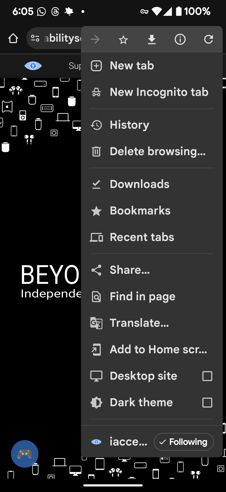

Learn how to enable the Dark Theme checkbox for Chrome on Android.
Some of the features on this page are experimental features that may not always work as indended or may compromise your device security, so proceed with caution.
While on a webpage, tap the three dot more options button in the top right corner, then tap the checkbox for Dark Theme.
Note that the checkbox to enable the Dark Theme for websites will not appear while your device system is set to Light Theme or Light Mode.
Last updated: March 31, 2025
All references to Google, Samsung Electronics, and their products and services are trade-marked and are used in these articles for educational purposes.